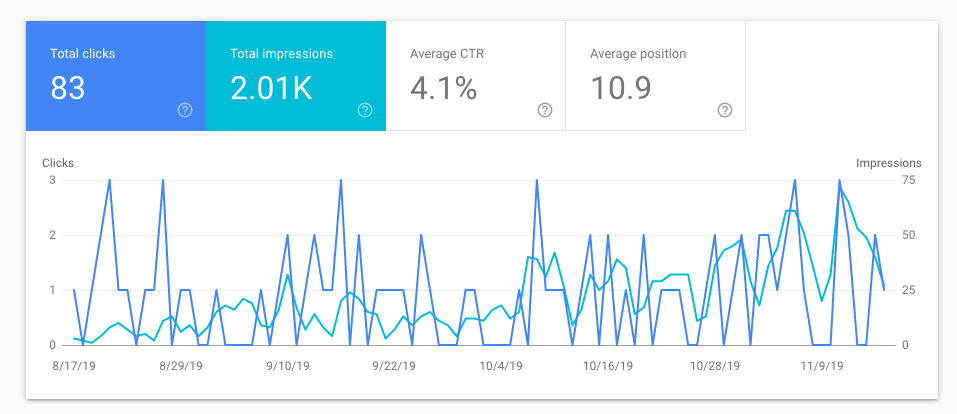

3 More Incredible Python Data Structure Tricks
My previous post did really well. I’m guessing you guys really like my Python content so here are 3 more incredible tricks you can use with Python Data Structures.

Extracting a Subset of a Dictionary
Problem
You want to make a dictionary that is a subset of another dictionary.
Solution
This can be easily accomplished using dictionary comprehension.
1 | prices = { |
Functional Python can be really cool indeed!
Determining the Most Frequently Occurring Item(s) in a Sequence
Problem
You have a sequence of items, and you’d like to determine the most frequently occurring item(s) in the sequence.
Solution
Of course, dictionaries can be used for this problem with the elements of the sequence as keys and the number of times they occur as values. However, this post is about tricks with Data Structures so we have to do something out-of-the-box.
The collections.Counter class is designed for such a problem. It even comes with a handy most_common() method that will give you the answer.
To illustrate, let’s say you have a list of words and you want find out which words occur most often.
1 | words = [ |
Under the covers, Counter is just a dictionary that maps the items to the number of occurrences. Also note, Counter objects can be fed any sequence of hashable input items.
Iterating Over all Possible Permutations or Combinations
Problem
You want to iterate over all possible permutations or combinations of a collection of items
Solution
The itertools module provides the required permutations() and combinations() functions for this task.
1 | from itertools import permutations |
Similarly, we can use the itertools.combinations() function to produce a sequence of combinations of items.
1 | from itertools import combinations |
Summary
And that’s it - 3 more simple tricks to make life easier when using Python’s data structures.